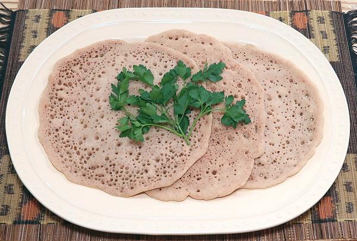
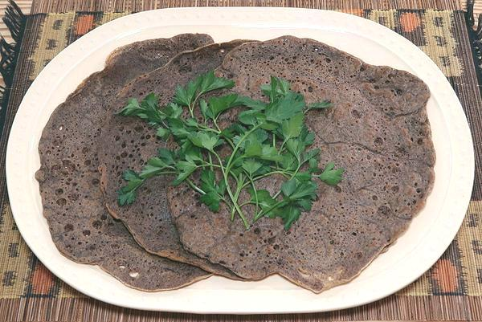
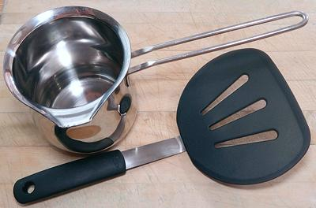

These Injera were made with Anthony's Organic Buckwheat
Flour.
They are about as dark as if made with Brown Teff.
White Teff would make Injera of an even lighter color.

These Injera were made with Bob's Red Mill Whole Grain
Buckwheat
Flour. They are way darker than if made with Brown Teff.
 This 16 inch Lefse griddle was used for the example breads.
In Ethiopia, it would be made on large disk of iron (formerly clay) over
a wood fire, but that takes a lot of experience to get the temperatures
right. A regular 12 inch iron skillet would work if well seasoned, or a
non-stick pan of similar size. Whatever pan is used, it must have a
cover. I suggest you have an Infrared Thermometer for accurate temperature
control. For details on the photo pan see our
Lefse Griddle page.
This 16 inch Lefse griddle was used for the example breads.
In Ethiopia, it would be made on large disk of iron (formerly clay) over
a wood fire, but that takes a lot of experience to get the temperatures
right. A regular 12 inch iron skillet would work if well seasoned, or a
non-stick pan of similar size. Whatever pan is used, it must have a
cover. I suggest you have an Infrared Thermometer for accurate temperature
control. For details on the photo pan see our
Lefse Griddle page.

These are my Injera tools. The stainless steel Pitcher holds
4 cups, but a 2 cup size would be sufficient and easier to handle. To take
the bread off the griddle, use a wide turner like Oxo example to the left in
the photo. If you turn the bread over, you will need another turner to
steady it, but a narrower one would be fine. If not using a non-stick pan,
you can use plain metal turners.